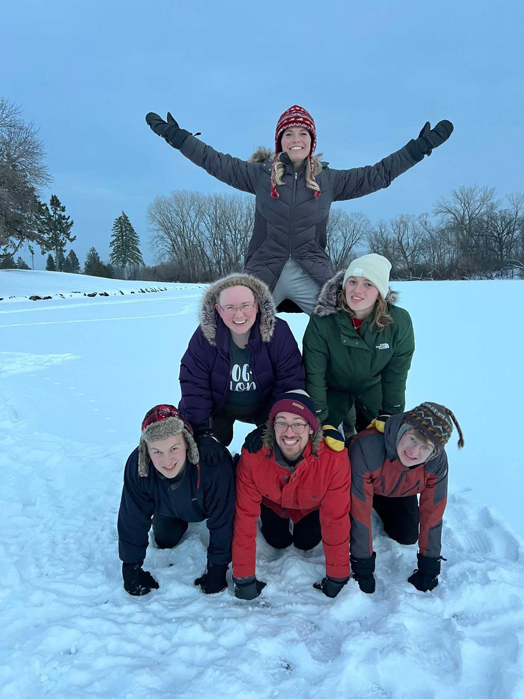
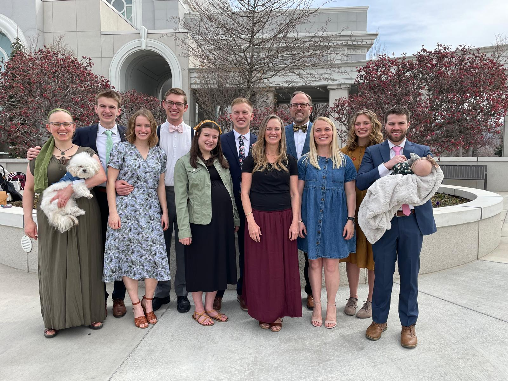

Home
Resume
Fruit Ninja Project
Preston J Smith
LinkedIn Profile
(763) 350-0472 |
preston.james.smith.28@gmail.com
Education
Brigham Young University - Marriott School of Business
Apr 2028
Bachelor of Science in Pre-Business
GPA: 3.75 / 4.00
Relevant Coursework: Accounting, Information Systems, Economics
Experience
Brigham Young University Marriott School of Business
Oct 2025 - Current
Research Assistant | Provo, UT
Analyzed scholarly journals and created a 1-page literature review
Developed and wrote a paragraph analysis of a research problem
Created data visualization graphic
Ebert Construction
May 2025 - Aug 2025
Carpentry/Demolition | Corcoran, MN
Installed steel framing, supports, and flooring panels in under two weeks
Demolished walls, removed ceiling tiles and carpet
McDonald's
Apr 2022 - Jun 2022
Shift Manager | Medina, MN
Strategized designation of 10 personnel to optimize production efficiency
Planned, organized, directed, and led a team of 10+ employees
Trained staff in best practices for job efficiency and safety
Mastered managerial tasks in under one month; opened and closed store independently
Leadership & Service
The Church of Jesus Christ of Latter-day Saints
Jul 2022 - Jul 2024
Volunteer Representative | Asunción, Paraguay
Developed traits such as goal setting, accountability, and discipline
Adapted to a foreign culture and built relationships of trust
Taught life skills to individuals from diverse countries
Awards, Skills & Interests
Technical:
Excel VBA, Macros, SQL, Power BI
Awards:
Eagle Scout, Boy Scouts of America
Athletics:
Track Team Captain (Improved 300m hurdle time by 2.66 seconds in one season)
Languages:
Spanish (Fluent in speaking; proficient in reading and writing)
Music:
Directed drumline; received superior ratings in ensemble and solo performances
Hobbies:
Competitive team sports, boating, biking, backpacking, climbing
Personal Gallery
 